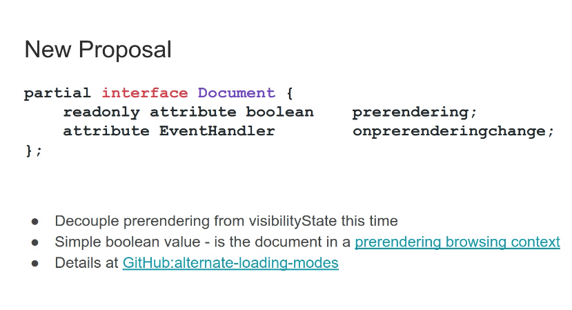
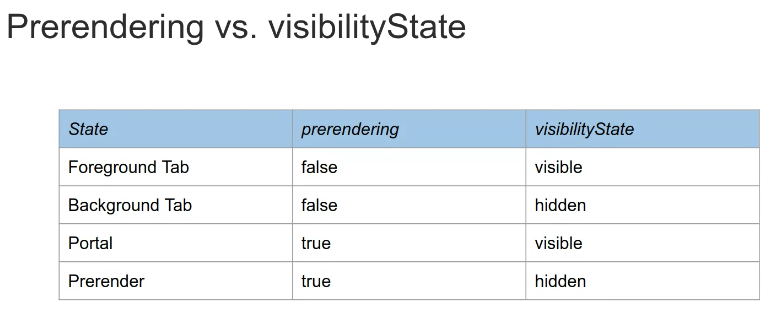

Participants
Nic Jansma, Yoav Weiss, David Bokan, Michal Mocny, Sean Feng, Nicolás Peña, Michelle Vu, Annie Sullivan, Steven Bougon, Carine Bournez, Phil Walton
Next Call
January 7th, skipping the pre-holidays meetings
- David: Hoping to reach the right people about prerendering and related visibility state
- …  height: 337.33px; margin-left: 0.00px; margin-top: 0.00px; transform: rotate(0.00rad) translateZ(0px); -webkit-transform: rotate(0.00rad) translateZ(0px);" title="">
- ... Want to expose a bit about if you’re in a prerendering browsing context
- ... Surveyed current use of visibility state, looked through HA and sampled pages
- ... Looked over top 100K using Chrome ClusterTelemetry, to find pages that change content based on visibility state
- Michal: What did you look at to determine different?
- David: Looked at textual differences between the versions, there was some noise, so required some manual inspection to find “real” differences
- ... Manually looked at a couple hundred pages
- ... Use cases broke down to 5 buckets: video/animations, deferred fetch of images and large resources, ads+analytics, server side logic (e.g. chatbots), as well as a “termination signal” to store state.
- ... Why not bring back the “prerender” state?
- Portals would be a prerendered page that will be visible, so prerender and visible won’t be mutually exclusive
- It’s also not mutually exclusive with hidden, and some uses can break, because people don’t think about prerender as hidden. Also less ergonomic.
- Plenty of examples of pages that assume that there are only 2 visibility states.
-  height: 253.33px; margin-left: 0.00px; margin-top: 0.00px; transform: rotate(0.00rad) translateZ(0px); -webkit-transform: rotate(0.00rad) translateZ(0px);" title="">
- ... Currently used as a termination signal - OS might kill you
- ... Tab and App switcher - say that it’s “hidden” but expect the page to look “alive”.
- ... The new prerendering bit doesn’t change the status quo, but doesn’t make things worse.
- ... When entering into a portal, we would want to save state, so having an explicit state for this seems like a better solution than just relying on visibility
- ... Feedback?
- Npm: Like the idea of separating prerendering from visibility state, wondering if we thought about exposing a previous prerendering state to the script. e.g. for visibility state, if you load too late, you might miss the state happened.
- David: “have I ever been prerendered?” Haven’t looked too closely into that
- Npm: Presented a solution for visibility state where we’d buffer the previous history, and give you the previous state. Seems like we’d need both this and the observer, because some use cases require quick reaction. For performance tracking it’s fine to just use the observer.
- David: I’d have to consider that
- ...: Wasn’t sure if it’s necessary for the prerendering case
- Nic: For analytics knowing if a page was loaded as prerendered seems critical. Affects characteristics of the page. Would be good to have that bucket.
- David: The reason I thought this is less of an issue is because for portals that the only way you can load it through prerendered
- Npm: Doesn’t Safari already prerender in the URL bar? Presumably, you’d want that to also happen through this API
- David: App switcher is a case. Maybe don’t need a user gesture.
- Michal: Excellent documentation! Like Nicolás, I like the separate of this state from visibility. Always thought of this as “non interactive”. Is the prerendering signal broadly necessary to know, or specific to loading conditions in portal context
- David: Broader than portals. RE interactive, do you consider a background tab interactive?
- Michal: No. Currently you’re either interactive and visible or not. But there are cases where one is true but not the other.
- David: For analytics, if it loads into a background tab, it’s a live page, but the user haven’t intentionally navigated to the page.
- Michal: If a tab has loaded in the background from the initial link?
- David: Today we want the analytics scripts to work, but not do that if the link was just prerendered by the browser.
- Michal: You would still have the visibility signal. Is this true that analytics want to report it?
- David: Ads want to report it, but note that the page is visible. But the page was “intentionally loaded”
- Michal: Second question - Portals "adopt", could go from prerender to visible back to prerender
- ... Does it make sense to go back to “prerendering” mode?
- ... Exiting prerender seems like something you should be able to do once
- ... Even if portal adopt, is it more like a prerender or BFCache?
- David: Restricted portal has the same restrictions
- Michal: Feels more like “non interactive”
- David: Couple of overlapping meanings. Find “prerendering” easier to think about, but maybe not the right name if put back into the portal
- Michal: Similar for app switcher. Calling it “prerendered” feels awkward. Wanted to see if this is specific to prerendering or broader
- David: Background page seems particularly tricky to me
- Michal: Does seem like an awkward matrix. Could they would have visibility hidden
- Yoav: Background page would be hidden but interactive. Interactive is not the right word, but is "alive"
- David: Something that the user is likely to interact with
- Npm: Is the main use case to track “intentionality”?
- David: Think so. Intentionality and server side. Other cases captured by “visible”
- Npm: Do you really need moving back to “unintentional”?
- David: Portals use case - carousel of articles but want to move back to the previous state
- Npm: Portal that takes over and goes back to portal?
- David: Yeah, not quite a navigation but is similar. But the active page might become a portal
- Yoav: Mentioned the "about to terminate" case, doesn't work in many edge cases. Think is to add another signal?
- David: Somewhat related. Wanted to not make the situation worse than it is. Using the visibility state is not great. The right path is not a state, but an event and the browser can dispatch that event when it wants. Seems cleaner from a semantics perspective
- ... Today on Android you don't get any functionality from OS in app switcher, but in the next release, we can dispatch it later
- Yoav: Makes sense, main hurdle is avoiding the XKCD situation where we have 17 dismissive events and now we're adding an 18th
- David: Worried about that, but hidden would mostly still work, and cases where it doesn’t
- Npm: Not sure developers actually follow our advice, because visible is not reliable. E.g. reporting at “onload”
- Michal: I think some of the reliability is due to implementation, and disagreements
- ... With this new mode, I wonder if we can say to always use this
- David: The idea that a new event would be syntactic sugar to “you entered hidden or prerender”
- Michal: willkillproc will not be reliable, so not sure that the suggestion on native is to trust that signal
- ... Visibility or prerendering seems better
- ... Transition would be easier
- David: Seems easier than telling people to switch off the stuff their already doing
- Michal: BFcache is entirely different
- David: A BFcache page won’t be in this state. It’s completely frozen, but current events are better
- Michal: Until we get previews when hovering the back button
- David: If we get there, that would be “prerendering”. So it would just work
- Npm: But standalone BFCache won’t have state
- Yoav: Current definition (transferSize-encodedBodySize) gives size of headers, which reveals cookie size.
- ... Bad regardless of TAO because we don't want to reveal even in same origin context
- ... We should define that transferSize does not include cookies
- Nicolás: What would be use cases for knowing header sizes outside of cookies. Sites sending large headers?
- Nic: Yeah we use that, but cookies are a large part of that
- Npm: If you can't do the cookie part, it's a half-baked solution
- Yoav: I could think of properties sending debugging information
- Nic: We independently report transferSize and encodedBodySize. Customers could do that. But no specific reports that flag that. Not sure if there’s been specific analysis related to that. We generally report total transferSize for “page weight”.
- ... If we were to remove cookies from transferSize, that could cause some confusion. Until all browser are doing that. Could we flag if headers are included or not?
- Michal: Is it not the case that on H2 the headers are compressed
- Yoav: They are compressed in some way. We could say this response's headers took this many bytes, outside of the raw sizes.
- ... At the same time, if we don't have a clear use case for transfer Sizes, maybe we just move everyone over to encoded body sizes.
- ... See if people can chime in with interesting use cases
- Michal: I think Yoav proposed at the beginning should we remove all header sizes, or just all header sizes minus cookie sizes
- Yoav: Not sure if anyone is looking at them, maybe not worthwhile to preserve
- Nic: Main concern with removing header sizes out of ResourceTiming is it moves us further away from Page Weight, and when developers compare RT to Dev Tools, there would be a discrepancy.
- Benjamin: Question because WebKit says this is one reason they don't implement sizes, what are the other use cases?
- Yoav: Safari hasn't implemented encodedBodySize either, good question to ask them
- Npm: We already have an open problem with sizes, we want to move away from TAO with those
- Yoav: Can we start counting in Chrome or others, what is the weight difference between total transfer size and/or minus cookie sizes
- Nic: How do you actually use this, do you compare document.cookie size versus transfer sizes?
- Yoav: Using Fetch(), but we can clarify the attack scenario
- Michelle: Question around transferSize when SW is involved, we're trying to get cache hit rate when SW is involved, but it's tricky
- Yoav: Have ResourceTiming integrate on Response object, which already has some of those sizes. Integrate with Fetch and everything falls out of that.